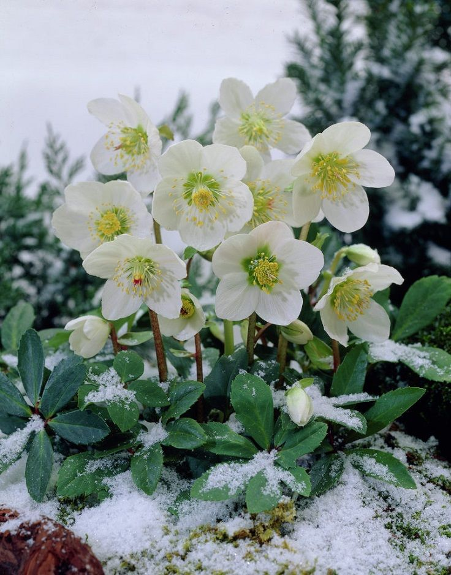

Explore Winter Gardening: Your Guide to Beautiful Blooms
Best Plants for Winter Gardening

Beautiful winter flowers in a garden
Amani
Job Title: Floral Specialist
Current Company/School: Renowned Flower Nursery
Short Bio: Amani is a passionate floral specialist dedicated to the art of
cultivating beautiful flowers. With years of experience in horticulture, Amani focuses
exclusively on breeding and nurturing various flower species, bringing vibrant colors and
enchanting fragrances to gardens and landscapes.
1. Choose Winter-Resilient Plants
Select plants that can thrive in cold weather, such as evergreens, holly, and winter-blooming
flowers like hellebores. These plants add greenery and color to your garden even in winter.
2. Use Decorative Planters
Incorporate unique planters in various shapes and materials. Consider using ceramic pots, wooden
crates, or metal containers to create an eclectic look in your garden.
3. Add Holiday Decor
Decorate your garden with holiday lights, wreaths, and festive ornaments. String lights along
pathways or around trees to create a magical ambiance during the winter evenings.
4. Create a Winter Oasis
Design a cozy seating area with outdoor furniture and warm blankets. Add cushions with
winter-themed designs to encourage outdoor enjoyment, even on chilly days.
5. Incorporate Colorful Decorations
Use colorful outdoor decorations, such as garden flags or painted garden stakes, to bring
vibrancy to the winter landscape. Bright colors can contrast beautifully against the snow.
6. Create a Winter Sculpture
Consider creating a snowman, ice sculptures, or even a stacked stone sculpture for added visual
interest in your garden. These unique features can become focal points during winter.
7. Use Natural Elements
Incorporate natural materials like pinecones, twigs, and branches into your garden decor. Arrange
them creatively in planters or as part of a natural centerpiece on your patio.
8. Add a Bird Feeder
Set up bird feeders to attract local birds to your garden. Not only does this provide a food
source for wildlife, but it also adds life and movement to your winter garden.
9. Utilize Garden Structures
Enhance your garden's structure with trellises, arches, or pergolas. Consider wrapping them in
lights or adding winter vines for an enchanting effect.
10. Plan for Spring
Finally, while decorating for winter, think ahead to spring. Plan where you will plant spring
bulbs or other flowers, and consider using temporary decorations that won't interfere with your
planting plans.
Conclusion
Decorating your garden in winter can bring joy and beauty to the season. By incorporating
winter-resilient plants and creative decorations, you can create a vibrant outdoor space that
shines even in the cold.